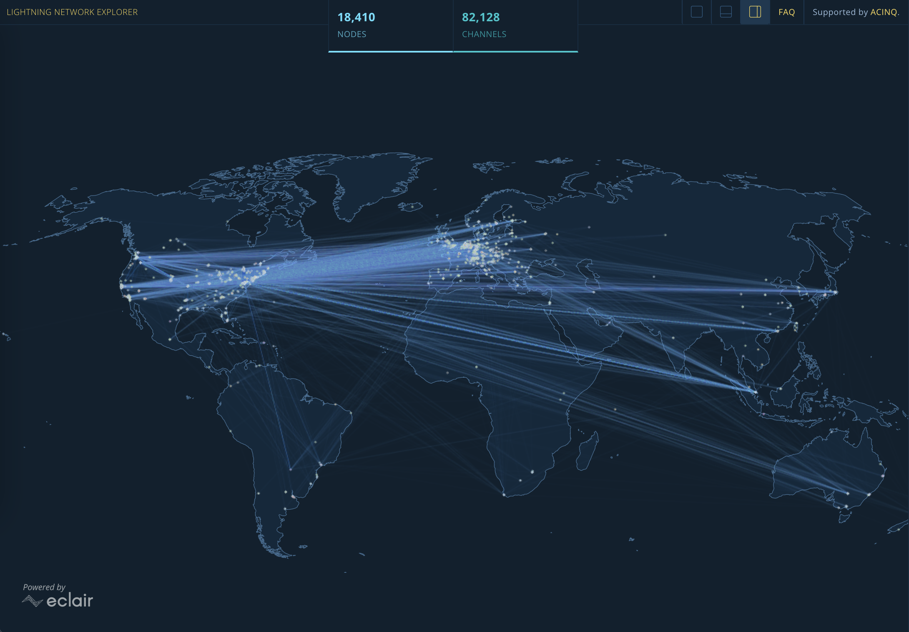

About
The Lightning
Network is a layer 2 protocol built on top of the Bitcoin network. It helps solve the
Bitcoin network's scaling issue by enabling users to perform quick transactions and payments between
users. The Lightning Network makes it easier for people to exchange money between each other and for
businesses to be able
to accept payments in Bitcoin. Similar to Bitcoin, there is no centralized database and anyone around
the world can set up their own node to help decentralize the network.
